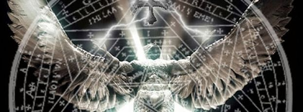
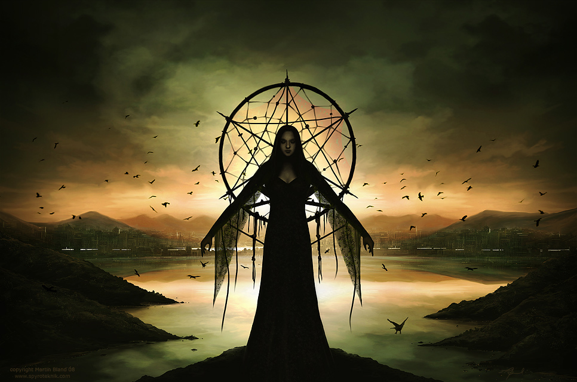
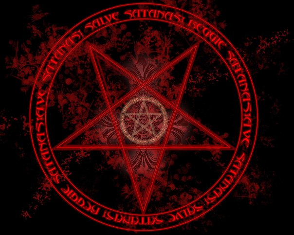

left

Как обнаружить и удалить последствия чёрной магии?
Черная магия в наше время принимается всерьез. Наши предки на протяжении нескольких тысяч лет использовали оккультные знания. Что есть черная магия? Почему люди боятся черной магии?
Магией может быть определена следующим образом – магия-это искусство и наука вызывать осознанные изменения в физическом мире, способность заставить произойти необходимые изменения, с мыслей и энергии на помощь.
Маг-это человек, у которого есть знания, как накапливать энергию и как с помощью данной энергии для влияния на других людей. Негативные мысли негативная энергия. Маг умеет заряжать мысль с энергией и направить на противника. Получив эту негативную энергию, с противником происходят различные аварии.
Что происходит в случае нападения?

У человека наступает эмоциональная нестабильность, быстрая утомляемость, нервозность, резкие изменения настроения, внезапные мысли о самоубийстве, сильная тоска, резкое ухудшение отношений с друзьями и членами семьи. Также появляется агрессия, внезапная ненависть к близким, которые ни с чем не связано, скандалы в семье, без особой причины. Человек может быть физически плохое самочувствие, стремительная потеря веса, потеря аппетита, тяжесть в груди, головная боль, бессонница и сонливость. Как фактор можно ознакомиться несчастных случаев на увеличение числа в семье, дорожно-транспортные происшествия, онкологические заболевания, тяжелые, неизлечимые болезни, тяжелой травмы, а также другие мистические явления, которые нельзя объяснить, например – родственников серийные смертность в относительно короткий промежуток времени.
Как найти кто это сделал?

Ищите виновника близких родственников, друзей, бизнес-партнеров, среди конкурентов. Конфликты в физическом мире, является причиной черной магии применения. Хочу сказать, что жертва также не без вины, потому что именно карма человека заставляет к ним обращаться, чтобы он мог реализоваться.
В любом случае, очень важно быстро почувствовать и обратиться за помощью к специалистам, чтобы удалить черную магию и ликвидации их воздействия.
Обычный человек, со своей небольшой жизненной энергии не может себя защитить, поэтому рекомендуется искать специалиста, который этим занимается каждый день.
right